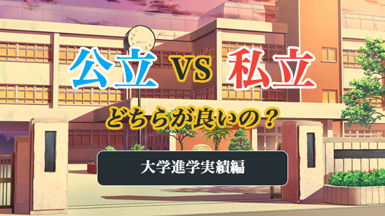

これはホントによく出る質問です。
塾講師時代も今も私は何百回と受験生の親からこの質問をされてきました。
私の答えを先に言うと「どちらでもよい」となります。
高校へ行く目的は、私の個人的見解では勉強がどうのこうのというより、いかに自分の能力や個性を発揮して楽しく有意義に過ごせるかであって、その意味では良き師、良き友に恵まれることが一番大切だと思っているからです。
したがって、どんな高校生活を送るかが大事でどの学校だから良いとか悪いとかいうのは本末転倒だといえます。
ただそうは言っても、親からすれば子どもに少しでも良い環境を与えたいと望むものです。だからこそ「ウチの子にとって良い学校とは？」があり、とりあえずの選択基準として公立か私立かと問うのでしょう。
というわけで、今回は公立と私立の大雑把な選択基準について話してみたいと思います。
ただし、これはあくまで私の経験をふまえた上での個人的見解であることを断っておきます。
大学進学の実績は教育レベルを反映していない
公立高校に関していうと、首都圏ではだいぶ前から私立に比べて分が悪いといえます。
分が悪いというのは、公立は私立に比べて色々な点でサービスが劣っているという「人々の思い込み」が定着していることが原因と思われます。
公立が敬遠される主な理由は以下のようなものでしょう。
- 進学指導や生徒指導に熱心ではない
- 校舎などの設備が劣る
- 保護者への情報や説明が少ない
- 全体に生徒の学力が低い
- 部活などが不活発（スポーツ系）
- 教育方針などが不明確で特色に欠ける
これらは多少一面的とはいえ、当たらずとも遠からずで公立の特徴を言い表していると思います。
特に大学進学の実績については、東大などの難関大学合格は圧倒的に私立や国立大附属の後塵（こうじん）を拝しているのが明らかです。
難関大学に受かりたければ私立が有利！
これは現在では既に常識といえます。
「では公立に行かないほうが良いのか？」
いや、そう単純に決めつけるわけにはいきません。というのも、有名大学にたくさん合格者を出している名門私立がそれほど優れた教育を実践しているわけではないからです。
どういうことでしょうか。
ここは多くの人が誤解しているところなので少し詳しくお話しします。
まず偏差値の高い名門私立の場合。
当たり前ですが、名門私立は既に中学生の段階からとびきり優秀な生徒を集めていて、さらに高校でもズバ抜けた生徒を容易に獲得できます。
彼ら（優秀な生徒たち）は、先生が熱心に指導するしないにかかわらず勝手に塾、予備校にも通って受験勉強を始めます。だから受かる！
何が言いたいかというと、大学合格実績は基本的に高校の先生の指導力の成果ではないということ。要するに名門私立には優秀な生徒が集まり、公立にはやや学力の劣る生徒が多いということであり、教育内容を反映した結果ではありません。そりゃ最初からできる生徒ばかり集まっていれば受かるでしょ。という話です。
私立が名門化する背景
しかし、名門私立は「名門」になる過程で良い教育をしてきたから今のような人気校になったのではないか。それなりにちゃんとした教育内容だからこそ優秀な生徒を集められるようになったのではないか。
そう思う人もいるかもしれませんが、私の考えは少し違います。
少し歴史を遡って話をします。
かつて─1960年台半ばまで─は、全国的に公立が優位な時代が続きました。東京でも都立日比谷高校など、名だたる名門都立が大学進学でも圧倒的な力を示していたのです。
日比谷→東大 というのが当時「王道」とされていました。
しかし東京都では「学校の序列化」を緩和するためと称して、都立入試に学校群制度を導入し過度の受験競争にストップをかけたのです。
学校群制度というのは、ここで詳しい話は省きますが、要するに受験生は複数の学校がひとつにまとめられたグループを選び出願。合格者はグループ内の学校に振り分けられるという制度です。
つまり受験生は行きたい学校にピンポイントで受験できず、合格するまでグループ（第○○群）内のどこに通うのが判明しないわけです。
これにより都立高人気は一気に衰退したのです。
そしてこの都立の凋落（ちょうらく）に呼応するように、その隙間を突いて飛び出してきたのがそれまで都立のすべり止め扱いだった私立です。
現在、大学進学などで名門とされる私立の多くはこの時期に躍進していきました。
ちょうど1970年代に入ると、力をつけてきた塾・予備校などとこれらの私立がタッグを組み、業者テストの偏差値を釣り上げたり巧みな広報戦略で生徒集めに邁進したのです。（当時は業者テストの偏差値を釣り上げるのは意外と簡単だった。）
キナ臭い話に聞こえるかもしれませんが、大学附属を除いて大学合格の実績を上げてきたこれら名門私立の多くが、塾などの受験産業の協力を得て「できる生徒」の確保を図ってきたのは紛れもない事実なのです。
教育内容云々より、彼らはむしろ「塾」を味方につける戦略と巧みな広報活動によって名門校にのし上がったといえるでしょう。
言い換えれば彼らは経営戦略において秀でていたのです。
私立が有利とは断言できない
つまり私が言いたいのは、大学進学実績の良さは公立私立を問わず教育内容の成果ではなく、始めから優秀な生徒が集っているだけであり、そういう生徒は意識が高いので早くから予備校、塾に通い勝手に準備をしているからということです。
ハッキリ言って、現在の高校ではどこであろうと大学受験指導のノウハウを持つ教師などほとんどいません。一部の特訓型私立（特進などできる生徒だけ集めたクラスを設置している学校）にわずかいるだけです。
意外に思うかもしれませんが、公立私立問わず、また偏差値の高い低いにかかわらず先生の授業レベルに大差はありません。
高校に大学合格の指導力があると思うのは幻想です。
その証拠に、東大など超難関大学を除けばGMARCHなどソコソコ有名大学の合格率（合格者数ではなく、合格者数を人数で割ったもの）は、公立校の方がその辺の名門私立より高かったりするのです。しかも地元の公立トップではなく、二番手三番手の公立が合格率でこれまた地元の名門私立と同等かそれ以上ということも珍しくありません。
これは数字を見ればすぐ分かります。
東大合格者についても、田舎に行けば現在でも地元の公立名門校の方が私立をリードしている例はたくさんあります。
「私立へ行きさえすれば大学進学に有利である」は絶対的な常識ではないということです。
親も「ウチの子はソコソコの私立だから大学は大丈夫だろう」とか「公立だから不利だ」と思うのは早計だということを認識して欲しいと思います。
次回は、大学進学以外の要素について公立私立の比較をしてみたいと思います。